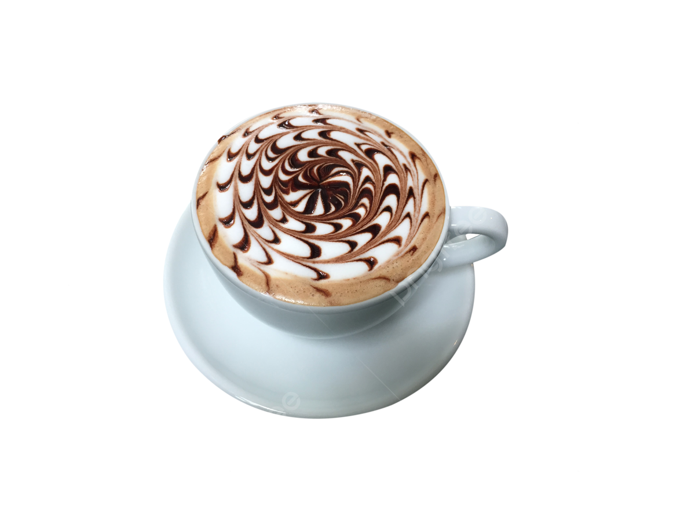

Coffee Mocha
₱149.00
A caffè mocha, also called a mocaccino or
simply mocha, is a chocolate-flavoured variant
of caffè latte, commonly served warm or hot in
a glass rather than a mug. The name is
derived from the city of Mokha in Yemen, which
was one of the centres of early coffee.